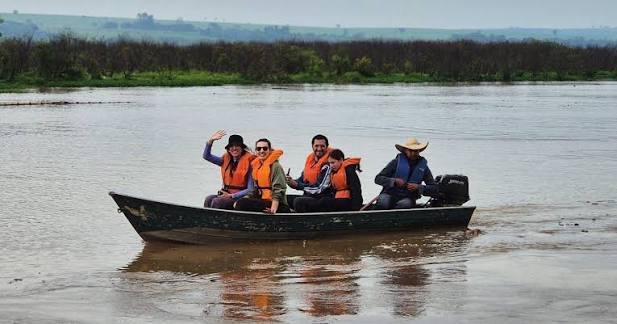
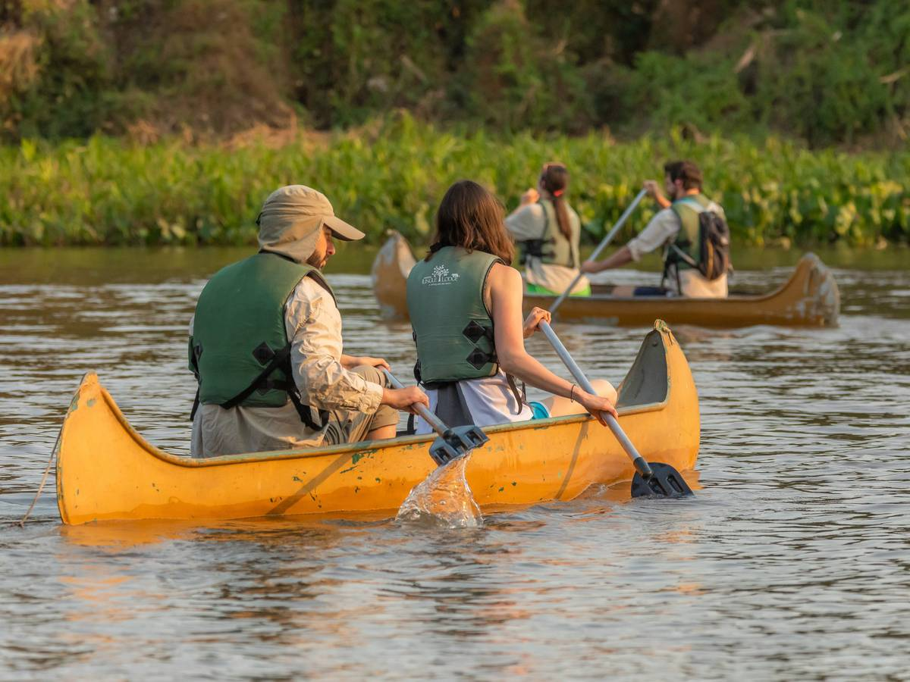
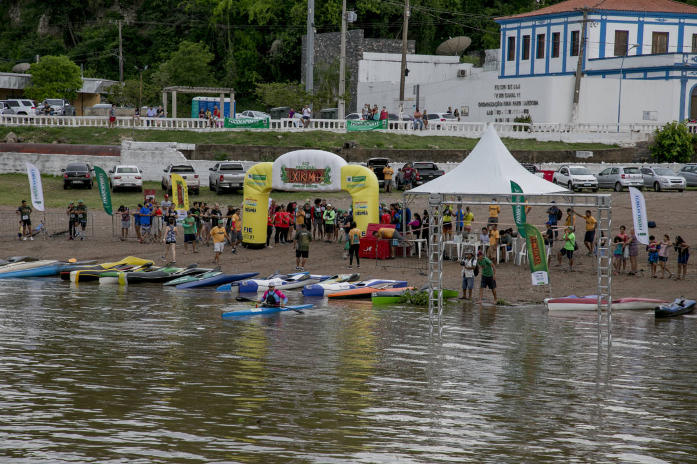

EXPERIÊNCIAS
Esportes Náuticos
Explore as águas do Pantanal Paulista e descubra diferentes possibilidades de lazer, aventura e contato com a natureza.

Aventura sobre as águas
Com rios, represas e paisagens naturais, o Pantanal Paulista apresenta um cenário que favorece atividades de lazer e turismo relacionadas à água.
Os esportes náuticos permitem conhecer a região por outra perspectiva, aproximando os visitantes das paisagens, da tranquilidade e da diversidade natural dos ambientes aquáticos.
Conheça algumas atividades

Passeios de barco
Uma maneira de contemplar os rios, conhecer paisagens e aproveitar momentos de lazer.

Caiaque e canoagem
Atividades que proporcionam contato próximo com a água e com os ambientes naturais.

Esportes aquáticos
Modalidades de lazer e aventura que aproveitam os ambientes aquáticos da região.
Turismo e preservação
Aproveitar os rios também significa cuidar deles. Respeitar as orientações de segurança, evitar o descarte de resíduos e preservar a fauna e a flora são atitudes importantes para manter esses ambientes conservados.
Onde praticar
Em Castilho, a Marina Urubupungá oferece escola náutica, aulas de Arrais Amador e passeios de barco pela Represa de Jupiá até a foz do Rio Tietê. Em Pereira Barreto, o Canal de Pereira Barreto permite navegar de barco e lancha. Em Ilha Solteira, o Rio Paraná tem ótimas condições para jet ski, e a Marina é ponto de apoio para windsurf e stand up paddle.
Por que escolher os esportes náuticos?
Com rios de grande beleza natural e paisagens que convidam à aventura, o Pantanal Paulista é um destino ideal para quem gosta de atividades ao ar livre e experiências em contato com a água. Os rios Paraná e Tietê proporcionam cenários especiais para aproveitar momentos de lazer, diversão e contemplação da natureza.
Os esportes náuticos são uma excelente maneira de explorar essas paisagens. Passeios de lancha, caiaque, stand up paddle e outras atividades aquáticas permitem conhecer a região por diferentes perspectivas, aproveitando suas águas e descobrindo lugares que tornam cada passeio uma experiência única.
Seja para quem procura adrenalina e movimento ou para quem prefere atividades mais tranquilas, há diferentes formas de aproveitar o ambiente aquático. Além da diversão, essas experiências proporcionam momentos de integração entre amigos e familiares, tornando a visita ainda mais especial.
O turismo náutico também contribui para valorizar os municípios da região, incentivando o comércio e os serviços locais. Para aproveitar tudo isso, é importante respeitar as orientações de segurança, utilizar os equipamentos adequados e preservar os ambientes naturais.
Venha conhecer o Pantanal Paulista e descubra como a combinação entre aventura, água e natureza pode transformar seu passeio em uma lembrança inesquecível!